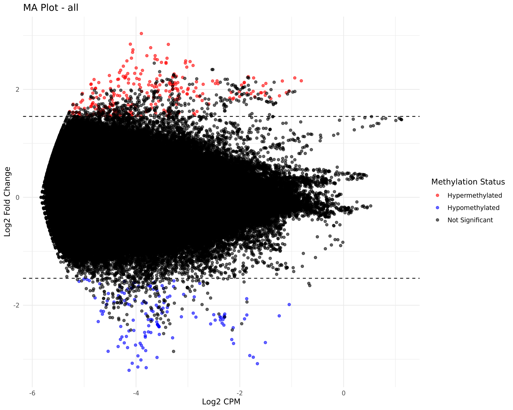
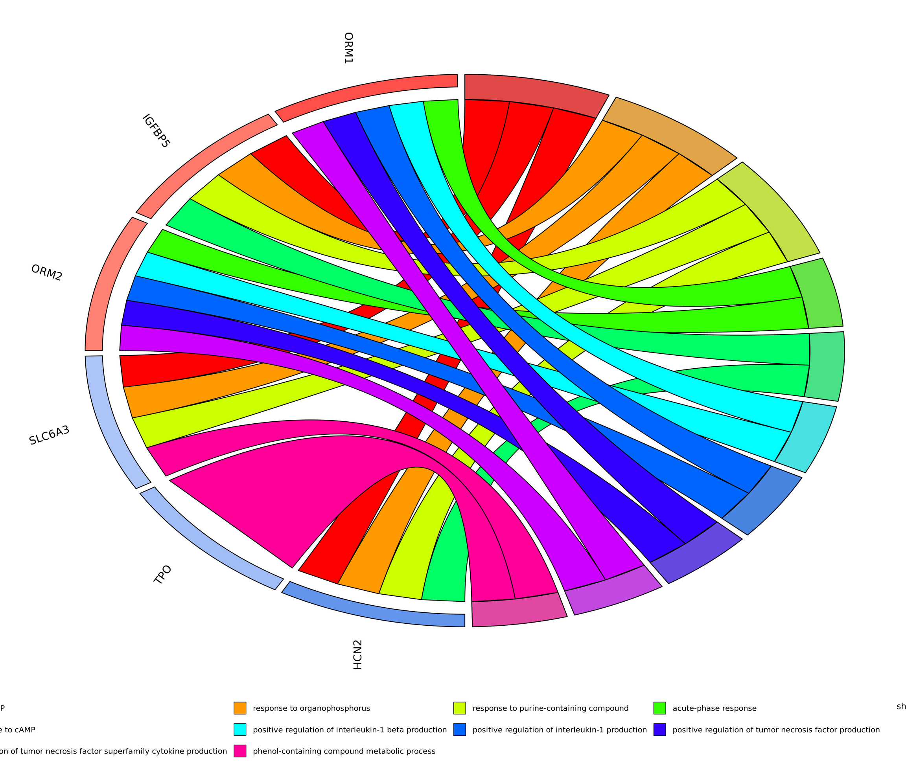

TwistMethylFlow integrates various tools and custom scripts to provide a comprehensive analysis workflow for Twist NGS Methylation data.
| Step | Tool/Software | Description |
|---|---|---|
| Generate Reference Genome | Bismark | Generate reference genome index files for bismark. |
| Raw Data QC | FastQC | Performs quality control checks on raw sequence data. |
| Adapter Trimming | Trim Galore | Trims adapters and low-quality bases from the reads. |
| Align Reads | Bismark (bowtie2) | Aligns bisulfite-treated reads to a reference genome. |
| Deduplicate removal | Bismark | Removes PCR duplicates from the aligned reads. |
| Sort and Indexing | Samtools | Sorts the aligned and deduplicated BAM files. |
| Extract Methylation Calls | Bismark | Extracts methylation calls from the aligned reads. |
| Summary Report | Bismark | Generates a summary report of the Bismark alignment and methylation extraction. |
| Alignment QC | Qualimap | Generates quality control metrics for the aligned reads. |
| QC Reporting | MultiQC | Aggregates quality control reports from various steps into a single report. |
| Differential Methylation | EdgeR, MethylKit |
Performs differential methylation analysis using EdgeR and MethylKit package. |
| Post Processing | ggplot2 | Generates summary statistics and visualizations of the differential methylation results. |
| GO Analysis | Gene Ontology | Generates GOChord diagram from gene ontology analysis results. |
Feature Details¶
- READ_PROCESSING: Checks the quality of raw sequencing data and trims low-quality bases and adapters to improve downstream analysis.
- BISMARK_ANALYSIS: Aligns bisulfite-converted reads to a reference genome, identifies and removes PCR duplicates, sorts and indexes the aligned reads, performs quality control on alignments, and extracts methylation information from the aligned reads.
- QC_REPORTING: Compiles quality control metrics from various steps into a comprehensive report for easy interpretation.
- DIFFERENTIAL_METHYLATION:
- EDGER_ANALYSIS:
- Takes coverage files, a design file, and comparison information as input.
- Performs differential methylation analysis using the EdgeR Bioconductor package.
- Outputs CSV files with differential methylation results for each group comparison. METHYLKIT_ANALYSIS:
- Takes coverage files, a design file, and comparison information as input.
- Performs differential methylation analysis using the EdgeR Bioconductor package.
- Outputs CSV files with differential methylation results for each group comparison.
- POST_PROCESSING:
- Reads the EdgeR results and generates:
- Summary statistics (total DMRs, hyper/hypomethylated regions, significant DMRs)
- Volcano plot (visualizing fold change vs. significance)
- MA plot (visualizing intensity vs. fold change)
-
Functional Analsysis
-
Reads the EdgeR/MethylKit results and generates -
- Top
ncorresponding genes from the EdgeR/MethylKit results are picked up to generate the gene ontology results. - generates a CSV file with the GO classification results (only Biological Processes).
- generates a Chord diagram for top 10 results from the GO analysis.
Read processing¶
Read processing subworkflow includes -
- FASTQC - for Quality check of samples
- TRIM Galore - adapter trimming
FastQC¶
FASTQC is a widely used tool for assessing the quality of raw and processed sequencing data. It provides a comprehensive quality check, including metrics like per-base quality scores, GC content, and adapter contamination.
fastqc $args --threads $task.cpus $reads
General Options
<file{R1,R2}.fastq>: Input FASTQ files (gzip-compressed files, e.g.,file1.fastq.gz, are also supported).-o <output_directory>: Specify the directory where reports will be saved. Defaults to the current directory if omitted.-t <number_of_threads>: Specify the number of threads for parallel processing.
FASTQC Results
- HTML Report: Visual summary of the quality metrics.
- ZIP File: Contains the raw data used to generate the report.
Key metrics in the HTML report:
- Per Base Sequence Quality:
- Boxplots showing quality scores across all positions in reads.
- Green indicates high-quality bases (>Q30).
- Per Sequence Quality Scores:
- Overall quality of reads in the file.
- Per Base GC Content:
- GC content distribution across the length of reads.
- Adapter Content:
- Detects overrepresented adapter sequences.
- Overrepresented Sequences:
- Identifies frequently occurring sequences (e.g., adapters or contaminants).
Trim Galore¶
Trim Galore is a versatile tool for trimming sequencing reads and removing adapter sequences. It’s particularly useful for preparing raw sequencing data for downstream applications like alignment or differential expression/methylation analysis. Trim Galore combines the functionalities of Cutadapt and FastQC for quality control and trimming.
trim_galore --paired --cores $task.cpus $args $reads
General Options
-q <quality>: Trim low-quality bases from the ends of reads. Default is20.--length <min_length>: Discard reads shorter than the specified length after trimming.--adapter <sequence>: Specify a custom adapter sequence. By default, Trim Galore auto-detects adapters.--gzip: Compress the output files into.gzformat.--fastqc: Run FastQC before and after trimming.--cores <number>: Use multiple cores for faster processing.
Bismark Analysis¶
Reference Genome Preparation¶
Bismark needs to prepare the bisulfite index for the genome.
- In the current pipeline, user can provide the
genome.fastaand the pipeline can index it. - Optinally, user can provide the index files directly, and the pipeline will use it without indexing the genome again.
General Options
--verbose: Prints detailed output during the indexing process.--parallel <threads>: Uses multiple threads to speed up genome preparation.--bowtie2: Specifies that Bowtie2 will be used for alignment (default option in most versions).--path_to_bowtie <path>: Specifies the path to the Bowtie installation if not in yourPATH.
Example with Options:
bismark_genome_preparation --bowtie2 --parallel 4 <genome.fasta>
Reference Genome Preparation
After successful completion, Bismark generates a bisulfite-converted genome in two orientations (C->T and G->A) along with the Bowtie/Bowtie2 indices.
Output directory structure:
your_path_to_reference/
Bisulfite_Genome/
CT_conversion/
GA_conversion/
genome.1.bt2
genome.2.bt2
...
Bismark Alignment¶
This step aligns bisulfite-treated sequencing reads to a reference genome.
bismark --genome <path_to_reference_genome> -1 <reads_R1.fq> -2 <reads_R2.fq> -o <output_directory>
General Options
* --genome: Path to the reference genome directory preprocessed with bismark_genome_preparation.
* -1 and -2: Specify paired-end reads. Use -U for single-end reads.
* -o: Output directory for alignment files.
Bismark Alignment
- Produces
.bamalignment files. - Produces
.report.txtand unmapped_reads.fq.gzfile.
Bismark Deduplication¶
This step removes duplicate reads to avoid overestimating methylation levels.
deduplicate_bismark ${paired_end} $args --bam $bam
General options:
* args options use all arguments from bismark deduplicate command.
* --paired: Use this for paired-end data. Remove for single-end reads.
* --bam: Specifies the input BAM file, generated from bismark alignment
Bismark Deduplicate Removal
- Generates a deduplicated
.bamfile. - Produces
deduplicated_report.txtfile.
Bismark Methylation Extractor¶
Extract methylation data from deduplicated BAM files.
bismark_methylation_extractor \
--bedGraph --gzip \
-o <output_directory> <deduplicated.bam>
General options:
* --bedGraph: Generates bedGraph file
* --gzip: Compresses the output files.
Bismark Methylation Extractor
- Generates
.bismark.cov.gzfiles and methylation call data in CpG, CHG, and CHH contexts. - Generates
bedGraph.gzfile. - Also generates
splitting_report.txtfile.
Bismark Report¶
Generate a summary report of alignment and methylation statistics.
Command:
bismark2report
Bismark Report
Produces an HTML file summarizing: * Alignment efficiency. * Duplicate rates. * Methylation levels (CpG, CHG, CHH contexts).
Alignment Quality Mapping¶
The main module for assessing alignment quality is qualimap bamqc.
qualimap bamqc \
-bam <input.bam> \
-outdir <output_directory> \
-outformat <html> \
--java-mem-size
General Options:
* -bam <input.bam>: Path to the aligned BAM file (e.g., deduplicated BAM file).
* -outdir <output_directory>: Directory for output reports.
* -outformat <pdf|html>: Choose the output format for the report.
Alignment Quality Check
The output includes:
- General Alignment Statistics:
- Total number of reads.
- Percentage of mapped reads.
- Percentage of properly paired reads (for paired-end data).
- Coverage Statistics:
- Mean coverage depth.
- Percentage of the genome covered at varying depths (e.g., 1x, 5x, 10x).
- Insert Size Distribution (for paired-end reads):
- Provides insights into library preparation and sequencing quality.
- GC Content Distribution:
- Checks for bias in GC content distribution compared to expected values.
- Read Quality Metrics:
- Distribution of mapping quality scores.
QC Reporting¶
MultiQC is used for the QC reporting combining all results from the FastQC, Trim galore, Bismark Alignment, Bismark Deduplication, Bismark summary report, and Qualimap results.
Output:
- Generates an interactive HTML report (
multiqc_report.html) and a data file (multiqc_data.json). - Output includes summary statistics, plots, and tool-specific metrics.
Differential Methylation Analysis¶
To calculate the differential methylation from the input samples, two different methods can be used -
EdgeR¶
edgeR is a Bioconductor package primarily used for RNA-seq differential expression analysis but can also handle differential methylation analysis when paired with bisulfite sequencing data. This requires pre-processed methylation data, such as counts of methylated (M) and unmethylated (U) reads at each cytosine position or region of interest.
Rscript $baseDir/bin/edgeR_analysis.R \
--coverage_files '${coverage_files}' \
--design "${design_file}" \
--compare "${compare_str}" \
--output . \
--threshold ${coverage_threshold}
General options
--coverage_files:selected from thebismark_methylation_extractorfiles.--design: selected from theSample_sheet.csv--compare: selected from theSample_sheet.csv.
EdgeR Results
- Generates
EdgeR_group_<compare_str>.csv.
MethylKit¶
MethylKit is an R package designed for analyzing bisulfite sequencing data, particularly for differential methylation analysis. It supports genome-wide methylation data and is ideal for CpG, CHH, and CHG methylation studies.
Rscript $baseDir/bin/run_methylkit.R \
--coverage_files '${coverage_files}' \
--design "${design_file}" \
--compare "${compare_str}" \
--output . \
--threshold ${coverage_threshold}
General options
--coverage_files:selected from thebismark_methylation_extractorfiles.--design: selected from theSample_sheet.csv--compare: selected from theSample_sheet.csv.
MethylKit Results
- Generates
Methylkit_group_<compare_str>.csv
Post-processing¶
Generates A) Volcano Plot, B) MA Plot and C) Summary Statistics from the Diffrential Methylation results.
Figures
Volcano Plot
MA plot 
Gene Ontology Analysis¶
The pipeline has also a module to perform the Gene Ontology analysis from the top n corresponding genes from the differential methylation results (EdgeR/MethylKit) using the clusterProfiler package.
The results generates a full table with all Biological Processes and a Chord diagram with top 10 functions identified in the analysis.
GOchord Diagram
